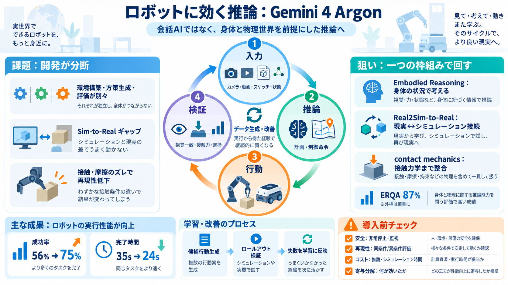

Gemini 4 Argon Benchmarks & Pricing (October 2026)
Gemini 4 Argon ranks #6 out of 218 models on the public BenchAlign leaderboard, with a score of 81.87/100. Its evidence …

「会話」ではなく「身体（ロボット）と物理世界前提の推論」で、制御・シミュレーション・データ生成・再現までをつなぐ――という主張を整理します。
ロボット開発は「環境構築」「方策生成」「評価」「データ生成」が別々になりがちで、サイクルが遅くなります。加えて、シミュレーションと現実（Real2Sim-to-Real）のギャップが成果を不安定にします。
Argonは、推論で計画・行動（制御命令）を作り、視覚・接触力・物理で検証し、その結果からデータ生成と改善へ回す循環を統合します。Embodied Reasoning（身体化された推論 / 身体の状況で考える）を前提にする点が中核です。
文章だけの知識ではなく、「何を正しいとみなすか」を検証条件（視覚一致・接触力一致・進捗曲線）として持ちます。地図（推論）を描いたら試運転（ロールアウト/復元）で確かめる設計です。
記事では、Embodied Reasoningベンチマーク（ERQA）で「純粋な推論」によるスコア87%が主張されています。これは運動手順以上に、空間理解と相互作用を扱える可能性を示す指標です。
Argonは、制御・Real2Sim・身体的理解・研究の再現・自己改善を同じ枠組みに寄せることで、開発の分断を減らす狙いです。
モバイルマニピュレーション、ゼロショット視覚制御、動画世界モデルのロールアウト、Sketch to Simulationなど、入力の種類を横断して「物理的に動く」例が示されています。
Real2Simで「視覚」だけでなく接触力（contact mechanics）まで一致させるのが重要だと述べられます。視覚が合っても押し付け・衝突・摩擦がズレると、現実で再現しない確率が上がります。
動画世界モデルの検証や、失敗区間を捉えた階層的ハインドサイトラベリング（hindsight labeling）、進捗の価値関数（value function）で品質を制御する、という流れが繰り返し登場します。
※価値関数は「どこが伸びた/停滞したか」を進捗曲線から扱うための枠組みとして説明されています。
シミュレーションで4,500本以上のドメインランダム化データを作り、成功率56%→75%、完了時間35s→24sへ改善した例が提示されています。研究デモから実用に近づく手触りがある、という評価になります。
記事の主張は有望ですが、失敗時の復旧可能性、計算コスト/レイテンシ、長期運用の安全性、Argon単体の寄与（複数サブシステム依存）などは読み取りにくいです。
Argonを「可能性の地図」として使うなら、性能だけでなく、安全・再現性・コスト・一般化限界を別立てで確認するのが現場では重要です。
参照用の用語：Embodied Reasoning（身体化された推論） / Real2Sim-to-Real / contact mechanics（接触力学） / value function（価値関数）
Gemini 4 Argon ranks #6 out of 218 models on the public BenchAlign leaderboard, with a score of 81.87/100. Its evidence …
core business functions, Argon ranks #1 with a score of 51.3%.
The Decoder (2026) reports a hallucination rate of 15% for Argon against 51% for GPT-6 Astra, but factual accuracy of 50…
➤ Lowest hallucination rate among leading models: On AA-Omniscience, Gemini 4 Argon has a 15% hallucination rate, the lo…
Artificial Analysis provides independent support for Google’s progress. Argon, using its highest reasoning setting, scor…